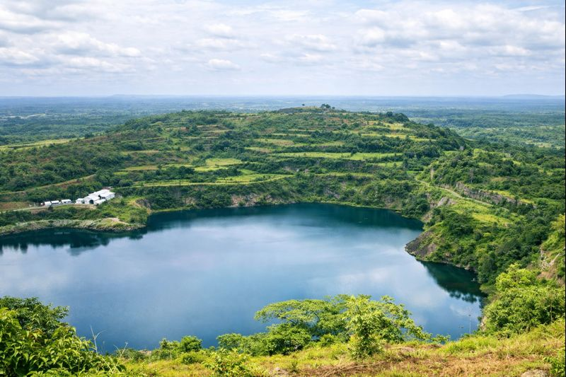

Sinoe County
35k
Parc National de Sapo
Forêt tropicale primaire, sanctuaire de l'hippopotame pygmée

RetourLa terre de la liberté et les joyaux de la côte poivrée
Le Libéria, la plus ancienne république d'Afrique, est une destination d'une authenticité rare, où l'histoire de la liberté rencontre une nature sauvage et préservée. Bordé par l'océan Atlantique, le pays offre des spots de surf de classe mondiale à Robertsport et des lagunes paisibles comme le lac Piso. À l'intérieur des terres, le parc national de Sapo abrite l'une des dernières forêts tropicales primaires d'Afrique de l'Ouest, refuge d'hippopotames pygmées et de chimpanzés. Monrovia, sa capitale dynamique, raconte le destin des pionniers revenus du Nouveau Monde, offrant un mélange unique de culture africaine et d'influences afro-américaines.
Découvrez les 15 sites emblématiques du Libéria
Forêt tropicale primaire, sanctuaire de l'hippopotame pygmée

Vagues légendaires et plages sauvages, paradis du surf ouest-africain

Le lieu de débarquement historique des premiers colons affranchis

Une vaste lagune côtière entourée de montagnes et de mangrove

Sommets embrumés et biodiversité unique (UNESCO)

Trésors ethnographiques et archives de la fondation de la République

Cascades rafraîchissantes et piscines naturelles en pleine jungle

Observation de chimpanzés réhabilités sur des îles fluviales

Détente entre forêt tropicale et océan, plage immaculée

Bâtiments coloniaux décrépis mais magnifiques et phares historiques

Corridor écologique transfrontalier riche en biodiversité

Lac d'un bleu profond formé dans une ancienne mine, entouré de verdure
Port maritime et plages de détente au sud de Monrovia
Plage populaire pour l'ambiance locale et les sorties dominicales
Port historique et porte d'accès sauvage au sud-est du pays
Le pionnier de la souveraineté africaine.
Le Libéria occupe une place unique dans l'histoire de l'Afrique en tant que première république indépendante du continent (1847). Sa culture est un mélange fascinant de l'héritage des "Americo-Liberians" (anciens esclaves revenus des États-Unis) et des 16 groupes ethniques autochtones. Cette dualité se reflète dans l'architecture coloniale de Harper et les traditions ancestrales des masques Gio et Mano. L'identité libérienne est forgée par la résilience, la poésie et une gastronomie riche où le beurre de palme et le riz Jollof sont les rois de la table.
Le Libéria n'a jamais été formellement colonisé, restant un phare de liberté pendant l'ère coloniale.
La tradition sculpturale raffinée des peuples Nimba, mondialement reconnue pour son expressivité.
Un genre musical urbain unique utilisant le dialecte local pour exprimer la réalité sociale.
Les institutions culturelles traditionnelles qui assurent la transmission de la morale et des savoirs.

L'artisanat authentique libérien. Du tissu "Country Cloth" aux masques sculptés du mont Nimba.
 Tissage
Tissage
Tissage traditionnel en coton lourd réalisé par les artisans Lofa, aux motifs bleus et blancs iconiques.
 Art
Art
Réplique authentique sculptée dans du bois dur noirci, emblématique du comté de Nimba.
 Gourmet
Gourmet
Base onctueuse et riche pour cuisiner les ragoûts traditionnels libériens, extraite à la main.
Bijou artisanal coloré réalisé par les créatrices locales de Waterside Market.
Savon naturel hydratant fabriqué avec de l'écorce de bananier et des huiles végétales.
Vannerie robuste et décorative faite de fibres de raphia séchées au soleil.

Aéroport RIA, Luxe

Marshall, Nature & Plage

Sinkor, Monrovia

Mamba Point, Vue Mer

Sinkor, Monrovia

Sinkor, Central
La cuisine libérienne est un mélange généreux d'influences africaines et américaines, riche en épices et en beurre de palme.
Manioc pilé frais, servi avec un bouillon de viande ou de poisson épicé (Pepper Soup).
Version locale du riz rouge, riche en viandes et légumes sautés.
Soupe onctueuse à base de pulpe de palme, plat de fête par excellence.
Feuilles de manioc finement broyées et cuisinées avec de l'huile de palme et du poisson.
Boule de manioc fermenté servie avec une soupe pimentée aux abats ou poisson.
Poisson frais frit nappé d'une sauce tomate pimentée aux oignons.
Bouillon épicé très relevé, réputé pour ses vertus médicinales.
Boisson forte et rafraîchissante au gingembre frais et au citron.
Infusion de fleurs d'hibiscus sucrée, servie très fraîche.
Petites douceurs frites à base de bananes très mûres et de farine.
Poulet braisé puis mijoté dans une sauce onctueuse à la palme.
Langoustes et crevettes grillées, pécées sur les côtes de Buchanan.
Découvrez la joie de vivre libérienne à travers ses fêtes nationales et culturelles.
La plus grande fête du pays (26 Juillet) célébrant la fondation de la République avec défilés et concerts.
Rassemblement des groupes ethniques du sud-est pour célébrer les danses et chants ancestraux.
Compétition annuelle attirant les surfeurs internationaux sur les vagues de Cape Mount.
C'est la période idéale pour voyager. Les routes sont praticables, les ciels sont dégagés et c'est le moment parfait pour le surf à Robertsport et le trekking à Sapo.
Le Libéria reçoit l'une des plus fortes pluviométries d'Afrique. La nature est verdoyante, mais de nombreuses pistes en province peuvent devenir très difficiles d'accès.
Le Libéria est globalement sûr pour les touristes. Évitez les déplacements nocturnes à pied à Monrovia. Soyez respectueux des traditions locales.
Vaccin Fièvre Jaune obligatoire. Traitement antipaludéen indispensable. Ne buvez que de l'eau en bouteille ou purifiée.
Visa obligatoire pour la plupart des nationalités. Faites vos démarches à l'avance auprès des ambassades libériennes.
Double monnaie : Dollar Libérien (LRD) et Dollar US. Le Dollar US est largement accepté. Prévoyez des espèces car les DAB sont limités.
Expert Jungle & Sapo NP
Expert en survie et pistage, Joseph vous emmènera en toute sécurité au cœur de la jungle dense de Sapo.
Experte Histoire & Monrovia
Spécialiste de la fondation de la république, Princess vous fera revivre l'épopée des pionniers sur l'île de Providence.
Guide Surf & Côte
Surfeur local de Robertsport, Morris connaît chaque vague et chaque courant de la péninsule de Cape Mount.